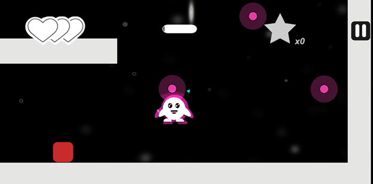
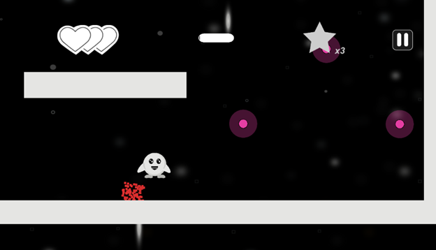

| Capstone Progress Week 7 |
This week, we played around with some ideas for polish and fun feel of our game.
I implemented the Universal Rendering Pipeline to our project to allow for custom 2D lighting.
I had to re-teach myself how this system worked, but I managed to create a glowing effect around the player when in range of a parry object.

I also played around with the idea of an accessibility setting to allow parrying to be more forgiving.
Right now, when you are in range of a parry object, you need to press and hold space to enter the quick time event and choose the direction you want to send yourself in.
The timing of this is very precise at high speeds, so I added the ability to hold space whenever you wanted and still enter the parry event when you entered an object’s range.
This made it a lot easier to combo off multiple objects but also caused an issue where you could gain infinite amounts of speed by hoping off the same object repeatedly.
I will continue to tweak this until it feels just right.
Will created some cool particle effects such as a trail behind the player when moving fast, and particle effects for when the player destroys an enemy. We worked together to create a dust particle for when the player lands at high speed since I made the player movement functions.  Joana created a really nice tile map for our levels and Hyangsu reworked some of the HUD elements. We worked remotely for the first time this week and I’d say it went well. We held a virtual standup which felt a little off. I definitely prefer doing in person meetings. When everyone was caught up, I stayed in a voice call with Kaleb and helped him figure out different ways to call audio from his audio manager.  Next week is our reading week but I am still planning on getting as much done as possible.
I’m planning on doing a bit of code refactoring and project organization since it is starting to get a little messy.
We are most likely still going to have our regular standups throughout the week to make sure everyone is caught up with Git merges.
Next week is our reading week but I am still planning on getting as much done as possible.
I’m planning on doing a bit of code refactoring and project organization since it is starting to get a little messy.
We are most likely still going to have our regular standups throughout the week to make sure everyone is caught up with Git merges.
|
|---|